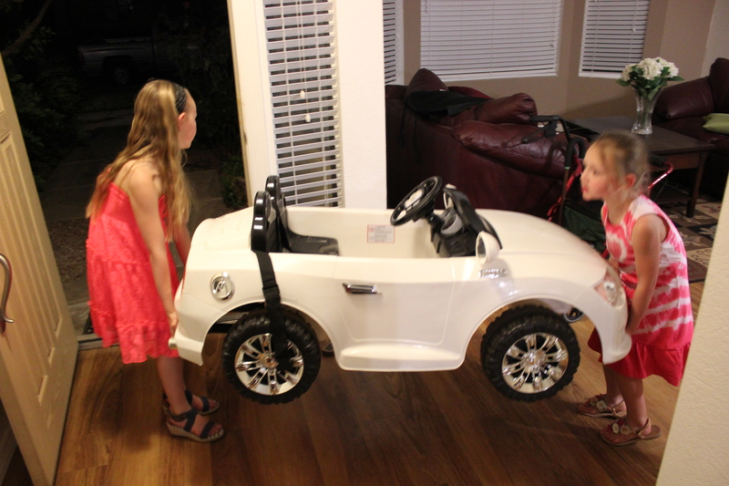
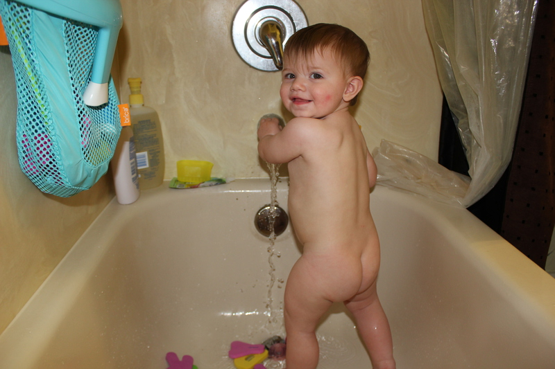
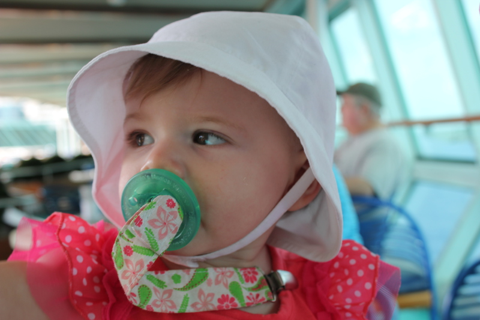
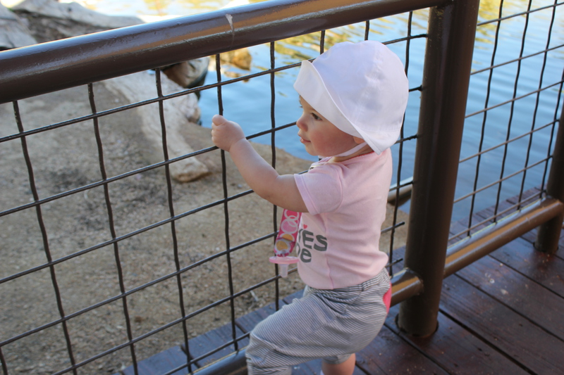

4/6/2013: New-birthday-chair
4/6/2013: Birthday-girl
4/6/2013: Getting-the-ball

4/3/2013: Pink-hat-looks
4/3/2013: Pink-hat-style

3/29/2013: Unatural-strength
3/29/2013: Generations-great-grandparents-in-Gilbert
3/29/2013: Driving-lessions-from-Brooklyn
3/29/2013: Driving-is-fun
3/29/2013: More-driving-lessons-from-Brook
3/28/2013: Sittin-in-the-treehouse-at-the-zoo
3/28/2013: Walking-on-water-with-Brooklyn
3/28/2013: I-dont-like-this-hat-anymore
3/28/2013: Something-is-in-my-shoe
3/28/2013: The-girls-and-flowers
3/28/2013: In-the-zoo-cave
3/28/2013: Cousintime-stylin
3/28/2013: Zoo-time
3/25/2013: No-really-its-for-dolls
3/25/2013: Sitting-in-the-dolls-wagon
3/16/2013: Chantell-finally-holds-me
3/16/2013: Trying-to-get-away-but-not-before-a-picture
3/16/2013: Driving-with-Jayden

3/15/2013: Standing-bathtime-baby
3/11/2013: Dressed-up-in-Dominica

2/28/2013: Snacky-sailor-baby
2/28/2013: Searious-sailor-baby
2/27/2013: Mommy-and-baby-look-into-distance
2/27/2013: Happy-closeup-sailor-baby
2/27/2013: Closeup-baby-sailor

2/26/2013: Pluggy-or-hand-your-choice

2/26/2013: Cant-get-rid-of-that-pluggy

2/26/2013: Minne-rat-and-steppin light
2/16/2013: Mmmmm-sour
2/16/2013: New-baby-food-rules
2/16/2013: Mommy-and-baby
2/16/2013: See-the-duckies

2/16/2013: Looking-at-duckies-probably
2/16/2013: Strollin-it
2/16/2013: Still-looking-at-myself
2/16/2013: Whos-that-baby
2/13/2013: Or-really-just-throwing-cloths-on-the-ground
2/13/2013: Helping-with-laundry
2/11/2013: Helping-with-dishes
2/11/2013: And-even-adding-soap